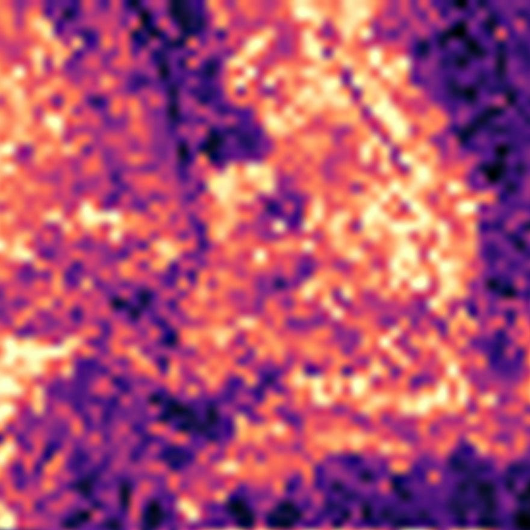

Sensitivity to the post-event image and to image change
Two probes of the fine-tuned model and one comparison with simple image statistics. They show input sensitivity and associations, not a full explanation of the network.
Pre-event image given as both dates
Share of test buildings (known footprints) predicted as damaged, by their reference class: with the real images, and with the pre-event image in place of the post-event one.
Predicted severity against image change inside each footprint
Validation buildings, binned by a measured pre→post image change (deciles). Solid: mean predicted severity (0 = no damage … 1 = destroyed). Dashed: mean reference severity. Wildfire damage shows up as colour and edge change; flood and earthquake damage barely changes roof pixels, and those buildings are mostly rated undamaged in both.
Change in the encoder's features between dates
Δ features: for each patch, how much the encoder's post-event feature differs from its pre-event feature, measured as 1 − cosine similarity. Shown next to the predictions; bright = large Δ.

